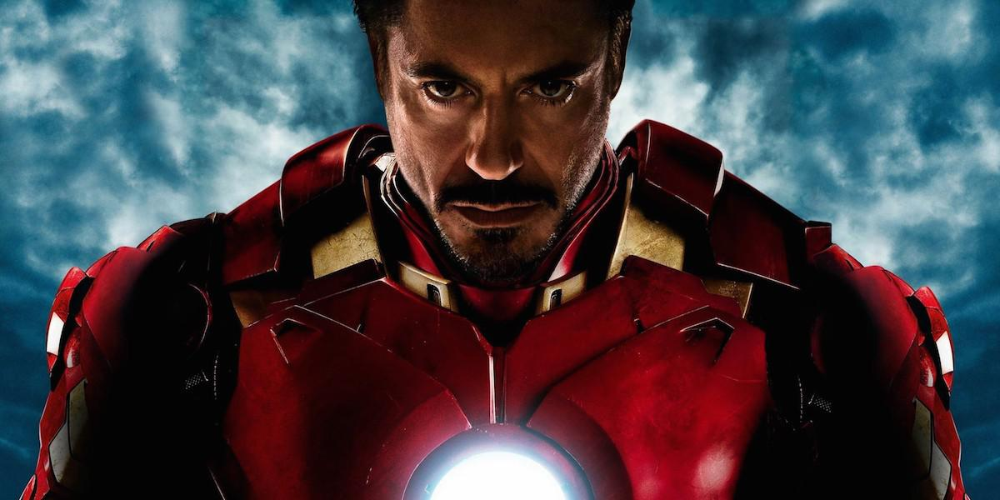

Downey began building upon theater roles, including in the short-lived off-Broadway musical American Passion at the Joyce Theater in 1983, produced by Norman Lear. In 1985, he was part of the new, younger cast hired for Saturday Night Live, but following a year of poor ratings and criticism of the new cast's comedic talents, he and most of the new crew were dropped and replaced.[19] Rolling Stone magazine named Downey the worst SNL cast member in its entire run, stating that the "Downey Fail sums up everything that makes SNL great."[21] That same year, Downey had a dramatic acting breakthrough when he played James Spader's character's sidekick in Tuff Turf and then a bully in John Hughes's Weird Science. He was considered for the role of Duckie in John Hughes's film Pretty in Pink (1986),[22] but his first lead role was with Molly Ringwald in The Pick-up Artist (1987). Because of these and other coming-of-age films Downey did during the 1980s, he is sometimes named as a member of the Brat Pack.[19][23]

In 1987, Downey played Julian Wells, a drug-addicted rich boy whose life rapidly spirals out of his control, in the film version of the Bret Easton Ellis novel Less than Zero. His performance, described by Janet Maslin in The New York Times as "desperately moving",[24] was widely praised, though Downey has said that for him "the role was like the ghost of Christmas Future" since his drug habit resulted in his becoming an "exaggeration of the character" in real life.[25] Zero drove Downey into films with bigger budgets and names, such as
Chances Are (1989) with Cybill Shepherd and Ryan O'Neal, Air
America (1990) with Mel Gibson, and Soapdish (1991) with Sally
Field, Kevin Kline, and Whoopi Goldberg.[26][27][28]
In 1992, he starred as Charlie Chaplin in Chaplin, a role for which
he prepared extensively, learning how to play the violin as well
as tennis left-handed. He had a personal coach in order to help him
imitate Chaplin's posture, and a way of carrying himself.[29] The
role garnered Downey an Academy Award nomination for Best Actor at
the Academy Awards 65th ceremony, losing to Al Pacino in Scent of a Woman.[30]
In 1993, he appeared in the films Heart and Souls with Alfre Woodard and
Kyra Sedgwick and Short Cuts with Matthew Modine and Julianne Moore, along
with a documentary that he wrote about the 1992 presidential campaigns
titled The Last Party (1993).[31][32][33] He starred in the 1994 films,
Only You with Marisa Tomei, and Natural Born Killers with Woody Harrelson.
[34][35] He then subsequently appeared in Restoration (1995), Richard III
(1995), Home for the Holidays (1995), Two Girls and a Guy (1997),[36]
as Special Agent John Royce in U.S. Marshals (1998), and in Black and
White (1999).[37][38][39][40]
In 2007, Downey was cast as the title character in the film Iron Man,[77] with director Jon Favreau explaining the choice by stating: "Downey wasn't the most obvious choice, but he understood what makes the character tick. He found a lot of his own life experience in 'Tony Stark'."[78] Favreau insisted on having Downey as he repeatedly claimed that Downey would be to Iron Man what Johnny Depp is to the Pirates of the Caribbean series: a lead actor who could both elevate the quality of the film and increase the public's interest in it.[43][79][80][81] For the role, Downey had to gain more than 20 pounds (9 kilograms) of muscle in five months to look like he "had the power to forge iron".[82]
Iron Man was globally released between April 30 and May 3, 2008, grossing over $585 million worldwide[83] and receiving rave reviews which cited Downey's performance as a highlight of the film.[84][85][86] By October 2008, Downey had agreed to appear as Iron Man in two Iron Man sequels, as part of the Iron Man franchise, as well as The Avengers, featuring the superhero team that Stark joins, based on Marvel's comic book series The Avengers.[87] He first reprised the role in a small appearance as Iron Man's alter ego Tony Stark in the 2008 film The Incredible Hulk, as a part of Marvel Studios' depicting the same Marvel Universe on film by providing continuity among the movies.[88]
CONTACT INFO
| Instagram: | robertdowneyjr |
| Twitter: | RobertDowneyJr |